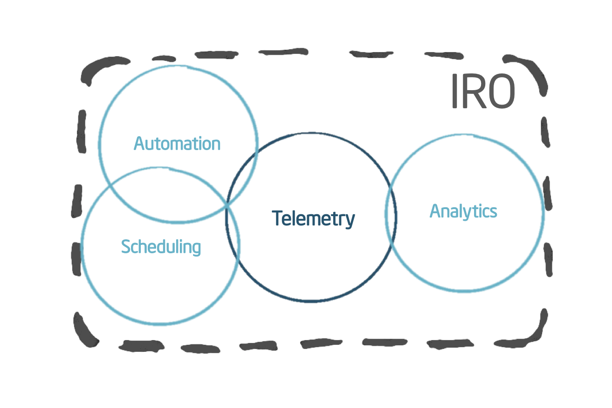

We have a vision for the next generation of cloud computing we call Intelligent Resource Orchestration (IRO) that achieves higher density, scale, and agility in a highly automated manner. Getting valuable, accurate, and consumable data from the hardware and software is the first step towards IRO, so we began asking ourselves “What would an operational framework focused on making the consumption of telemetry much easier look like?” Thus snap was born.
Learn more about that story here.

snap is designed to:
Expose a consistent set of telemetry data
Simplify telemetry ingestion across storage systems
Improve the deployment model, packaging and flexibility for collecting telemetry
Allow flexible processing of telemetry data on agent
Provide powerful clustered control of telemetry workflows
Simplified Workflow
Achieve a single extensible flow starting with data collection at all layers, then transforming the data with basic filtering or adding information for context, and finishing with publishing the processed data to one or more platforms.
Plugin Architecture
Allows users to mix and match functionality based on need using three types of plugins: collectors, processors, and publishers.
Collect
Process
Publish
Collect telemetry data once via plugins for:
Bare metal, including Intel specific platform metrics (Node, DCM, NIC, SMARTS, Ethtool, OSv)
Operating Environments and existing telemetry (Docker, libvirt, psutil, Collectd)
Application services and adjacencies (Ceph, HAProxy, Etcd, Facter, MySQL, Apache)
Priority services and other third party plugins
Filter, alter or append metadata as many times as you need via plugins for:
Filtering (Moving Averages)
Normalization
Encryption for all or part of the data set
Injection of remote requires for tokens
Publish data as many times as you need via plugins for:
Dynamic plugin operations means loading, updating, and unloading plugins without restarting snap or extra configuration management.
Dynamic updates ensure simple and secure bug fixes, security patching, and improved accuracy in production.
Scale with Ease
The clustering feature, tribe, simplifies cluster configuration management and enables scale with less operational cost.